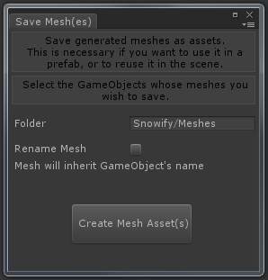

|
- Snow Direction: Choose how the snow will fall, either by inputting a direction vector, or by assigning an object who's local forward direction will be used. Default is straight down: Vector3(0,-1,0) - Snow Thickness: Determines how thick/high the snow will be. - Height Segments: the amount of detail in the snow's height/thickness. - Close Bottom: Determines whether or not the snow will have completely closed meshes. Unnecessary normally, as these polygons are obscured by the mesh they rest upon. Generally only usefull if the snow lies on semitransparent surfaces (like glass for example). - Only High Snow: When true(toggle on), there will only be snow above a certain height (world space height). - Minimum Height: The minimum height below which there will be no snow. (Only visible and adjustable when "Only High Snow" is toggled on) - Remove Covered Snow: Determines whether or not there will be snow in covered areas, and how it will be calculated:
- Snow Material: The snow material, can be any material you want. Default is the included material "Snow", which is a bumped specular material. - Save/Load: Temporarily backup the selected snow mesh(es) with the "Save"-button. Reload it later with the "Load"-button (also only loads for selected objects). Only for temporarily use; changing scene, quiting unity, or closing the Snowify window can clear the backups. |
|
- Extrude along normal: Determines whether the snow accumulates along the normal of the surface it rests on (toggle on), or in the direction the snow falls (toggle of) Default is false (toggle off). - Bulge Factor: Determines how much the snow bulges at its borders, with 0 being no bulge, and 1 being a full bulge. It is generally undesirable to have a bulge higher than 1. When 0 (no bulge), the snow will be layered in a straight line. When set to 0, and "Smooth Iterations" is also set to 0, "Height Segments" should also best be set to 0, as there is no advantage for this then. Default is 0.55. - Max Angle: Max angle of a surface for snow to rest on (in degrees). This is the angle between the snow direction and the (opposite of the) surface normal. When the snow is set to fall straight down, this is the slope angle of the surface. value will be clamped between 0 and 180 when "Extrude along normal" is on, otherwise it will be between 0 and 90. Default is 60. - Subdivisions: The amount of subdivision iterations. Every iteration almost quadruples the tricount. (so use with care) This is mostly usefull in combination with smoothing (see lower), or to get a more precise result from the "Remove covered snow"-option, but otherwise it should best be kept at 0 as it has no other benefit. Default is 0. - Smooth Iterations: The amount of smoothing iterations. Uses a custom distance-based algorithm that makes sure the snow stays on the surface it rests upon. This can make the snow look more natural, but it doesn't work well in all cases, it works best when the snow surfaces have a convex shape. Default is 0. - UV Scale: Scales the snow's uv-coordiantes. This is similar to setting the tiling parameters in the material. (Can ofcourse be used in conjunction) Default is 1. - Prefix and Suffix: For naming the generated snow objects, their name will be: prefix + source object's name + suffix. Default Prefix is empty, Suffix is "_snow". - Static Flags: The static flags of the Snow GameObjects. Default is Occluder, Occludee and Batching static. - Delete old snow object. Determines whether or not the old snow object (associated with the selected source object) will be deleted when a new snow object is created (for the selected source object). The snowify window keeps track of the snow objects, and which objects in the scene it has created snow objects for. However, when changing scenes or reinitializing the snowify window, it will have lost this information. Therefore you will then have to delete old snow-objects manually when creating new ones. Default is true (toggle on). |
|  |
- Folder: The path to were the mesh asset(s) will be stored in your project. Relative to the Assets folder. Folders will be created if they don't exist already. Default is "Snowify/Meshes" - Rename Mesh: Determines how to name the mesh asset(s), either it will inherit the object's name (toggle off), or you will have to specify a new name (toggle on). Note that existing assets will never be overwritten, the newly created mesh assets will have an extra suffix in case of naming conflict. Also note that when selecting multiple meshes, renaming them will give them all the same name (but with the extra suffix). Default is false (toggle off). |
|
- Snow Texture Index: Determines which of the terrain textures is the snow texture. (0-based index) - Default Texture Index: Determines which of the terrain textures is the default texture. (0-based index) This texture is used when removing snow from places that use no other texture. - Fade Angle: Similar to the "Max Angle" Snowify-setting: The max angle of a surface for snow to rest on (in degrees). This is the angle between the snow direction and the (opposite of the) surface normal. Start Fade Angle is the angle below which snow is 100% and above which the snow fades out. End Fade Angle is the angle above which snow is 0% and below which the snow fades in. - Fade Height: Similar to the "Minimum Height" Snowify-setting: The minimum height below which there will be no snow. Start Fade Height is the height above which snow is 100% and below which the snow fades out. End Fade Height is the height below which snow is 0% and above which the snow fades in. - Snow Direction: Similar to the "Snow Direction" Snowify-setting: Choose how the snow will fall, either by inputting a direction vector, or by assigning an object who's local forward direction will be used. Default is straight down: Vector3(0,-1,0) - Remove Snow (button): Removes snow from the terrain, and paints the default texture where snow was 100%. If you simply want to revert the terrain to before the snowify, it is best to use the Load button instead (if the terrain was saved using the Save-button or Auto-Save before the snowify ofcourse). - Snow Height: Similar to the "Snow Thickness" Snowify-setting: Determines how thick/high the snow will be. (offset snow parameter) - Extra Snow Samples: Sample distance to determine which snow to offset. The more samples, the further snow has the be away from no-snow-areas to be offset. (offset snow parameter) - Snowcurve: Determines the ratio between snow percentage and offset height. (offset snow parameter) - Auto-Save/Load: Automatically loads the terrain's height and splatmaps first when pressing the Snowify button, or saves instead if there was no save file already. - Save/Load: Similar to the Save/Load Snowify-buttons: Temporarily backup the selected terrain's height and splatmaps with the "Save"-button. Reload it later with the "Load"-button. Only for temporarily use; changing scene, quiting unity, or closing the SnowifyTerrain window can clear the backups. |